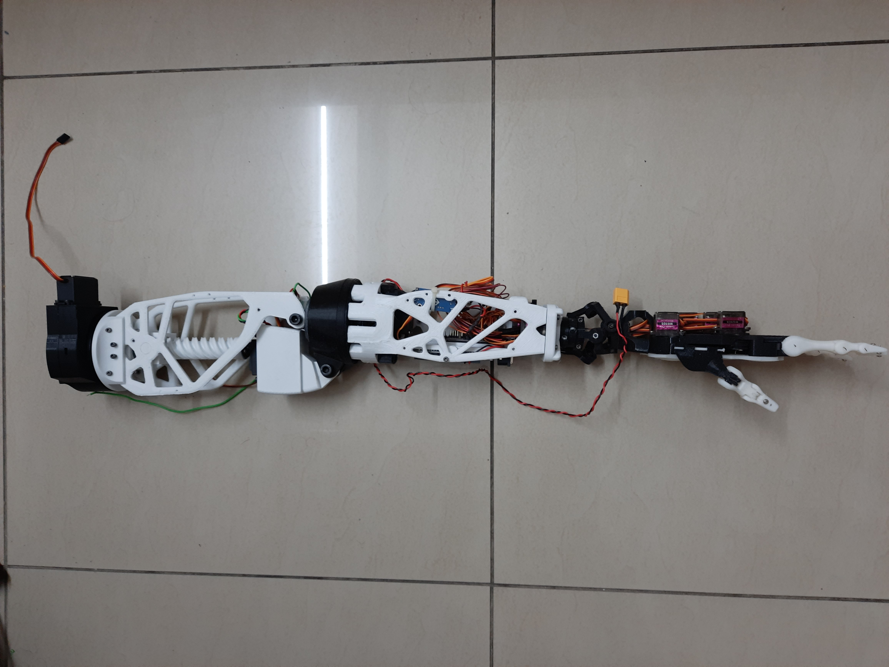
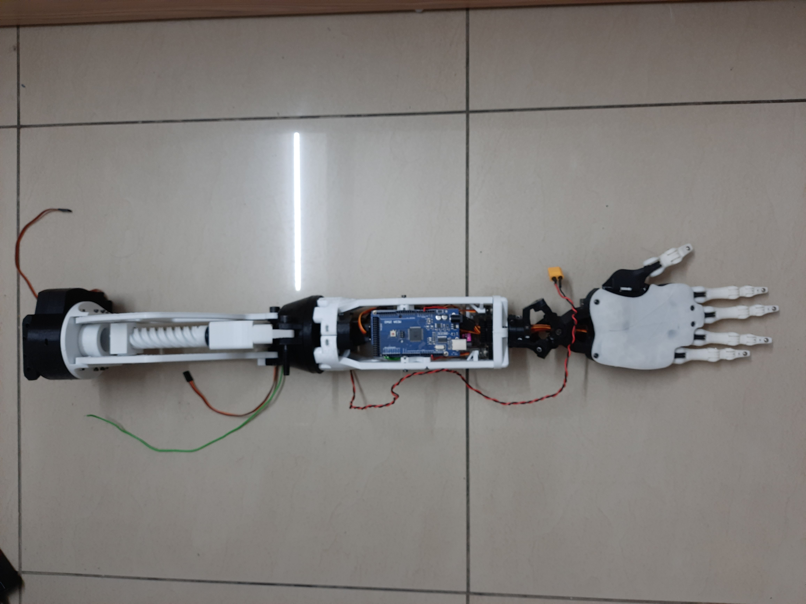
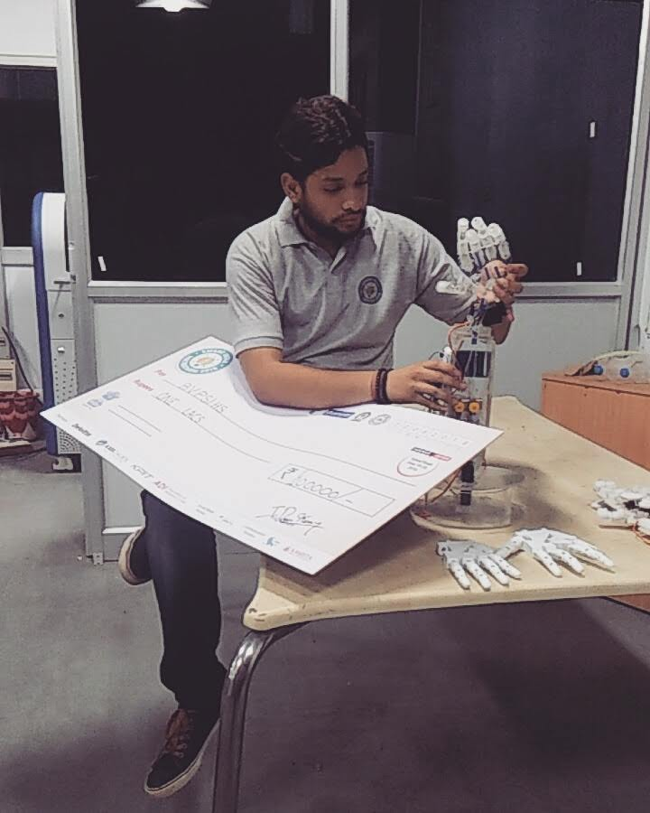

Mechatronics Engg, Co-Founder Akshar BIonics, 2021
New Delhi, India
I co-founded Akshar Bionics in January 2021 along with five of my teammates.
Our vision was to address the learning disparities between children with hearing
disabilities and their peers by introducing a robotic hand capable of translating
a teacher’s spoken words into sign language in real time directly inside classrooms.
Our journey began earlier in 2018, when our team was selected to represent
our college in the “Drones and Robotics” track of the prestigious Smart
India Hackathon – Hardware Edition, a national-level competition organised
by the Government of India.
The Grand Finale, hosted at the Indian Institute of Technology, Kanpur,
brought together 17 teams from across India. We were proud to secure 1st
place in our category. Following the win, we received a grant of INR 10 Lakhs
from the Ministry Innovation Council (MIC), Ministry of Education, Government
of India. This funding enabled us to further develop our prototype, manufacture
the arm using 3D printing, and conduct multiple user surveys to validate and
refine our idea.
Beyond translation, we recognized the potential of our robotic arm for
upper-limb prosthetics. With this direction, we redesigned later versions
to include modular joints that could be stacked and configured based on a
patient’s needs. Eventually, we developed a complete arm — from the shoulder
joint down to individually actuated fingers.
This project became the foundation of many core engineering skills I carry today.
Since our college did not have a mechanical department, I self-taught mechanical
design through online resources and modeled the entire robotic arm in Autodesk
Fusion 360. I also strengthened my abilities in embedded software, robotics
system design, and hardware-software integration.
Working on Akshar Bionics also sparked my interest in rapid prototyping and
3D printing. During the COVID lockdown, I explored this further by building
several smaller personal projects — many of which I still use at home today.


